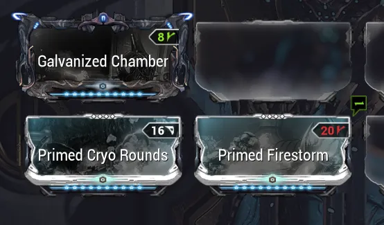
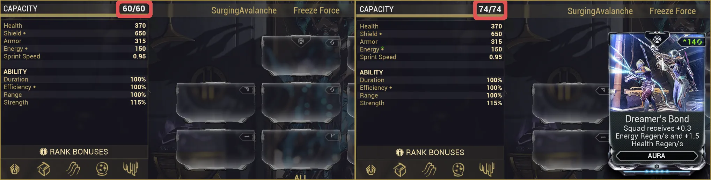

The Basics: Modding Terminology
Table of Contents
Overview
Modding is the main way players customize and strengthen their gear in Warframe. With so many mods, stats, and interactions, modding can feel overwhelming at first, but the core modding concepts are a lot easier to digest than they appear. Understanding even the basics will pay off at any point in the game, and most players will hit a 'wall' at some point where the game becomes harder to handle without either good modding skills or the knowledge to find and follow reliable build guides. This page, along with others in this section, aims to explain modding concepts at multiple levels to give you that foundation.
Modding Fundamentals
Mods
Mods are upgrades that can be applied to your Warframes, weapons, companions, and more, to improve their stats and add new effects. Each mod has a rarity, polarity, rank, and drain cost (amount of capacity it costs to equip). Mods are your core source of power for your builds and how you mod can completely change your playstyles and damage.
Mod power scales significantly with rank. A rank 0 Serration gives +15% damage for 4 drain. A rank 4 Serration has a drain of 8 but gives +75% damage. That's 5 times the damage boost for only double the drain! As such, when working with limited capacity, a few high ranked mods will usually outperform a full build of low ranked mods.
Ranking up mods requires Endo, which drops randomly from enemies and through other sources. Check out our Endo Farming guide for tips on targeted Endo farms.
{kind=link}
Capacity
Capacity determines the number and rank of the mods that you can fit on a given item. Capacity increases by 1 per item rank, so most standard weapons or Warframes have a maximum of 30 capacity. However, this doesn't mean weapons start with no capacity to mod. Items also have a minimum mod capacity of 15 plus 1 for every 2 Mastery Ranks (MR) up to MR30.
Note: Applying an Orokin Reactor or Catalyst to an item will double its capacity (max 60 capacity)
Polarities & Forma
Polarities are symbols on both mods and mod slots. Putting a mod into a slot with a matching polarity will turn the symbol green and either halve the drain on the mod or double the capacity boost (for auras and stances). Mismatch the polarities and the symbol will turn red, increasing the mod's capacity by 25% and decreasing the capacity boost (for auras and stances).
Forma is a consumable that changes or adds 1 polarity to an item. The item must be at max possible rank to use Forma on it and using Forma will reset the rank to 0 again. Forma blueprints are mainly earned through Void Relics, but they can also be obtained from alerts, invasions, and other sources. Additionally, you can just buy Forma from the Market for 20 plat. You can purchase bundles of 3 Forma for 35 plat (saves ~8 plat per forma) which is a significantly better deal.
{kind=link}

Orokin Reactor & Catalyst
Orokin Reactors and Orokin Catalysts are consumables that permanently double an item's capacity. Reactors are used on Warframes, companions, and vehicles, and Catalysts are used on weapons. These are also sometimes called gold and blue potatoes respectively.
Both can be obtained through Nightwave credit purchases, alerts, invasions, and various mid to late game mission rewards. Additionally, both can be bought on the Market for 20 plat each.
Note: If you are willing to get into trading, I recommend buying high value aura mods like Corrosive Projection, Steel Charge, and Energy Siphon with your Nightwave credits. These mods can be sold for 10-15 plat over warframe.market or trade chat and that platinum can then be used to purchase Reactors and Catalysts. This generally gets more value out of your Nightwave Credits.
Aura & Stance Mods
Aura mods are special Warframe exclusive mods that occupy a dedicated slot and provide bonus capacity instead of draining capacity. Their effects are also shared across the entire party, which can stack up for some nice boosts. Most Aura mods can be purchased from the Nightwave credit shop, which rotates its offerings on a weekly basis.
Stances are similar to Aura mods, but apply only to melee weapons. Like auras, they provide bonus capacity and have their own slot. Uniquely, each stance is tied to a specific melee category (swords, hammers, etc) and comes with its own series of melee combos.
{kind=link}

Exilus Mods
Exilus mods are generally low-cost utility mods that have their own dedicated Exilus slot, though they can be placed in regular slots as well. Exilus slots require an Exilus Adapter to unlock, and weapons and Warframes have different Exilus Adapters. Adapters can be obtained from various vendors, as random rewards for special missions like invasions, or by purchasing them from the Market.
Arcanes
Arcanes are special enhancements like mods, but have a condition to activate or scale their effect. Warframes are able to equip 2 of these arcanes, but weapons will require an adaptor to access the slot and can usually only equip 1 arcane.
Weapon arcane slots are hidden until you unlock the Steel Path, at which point you can obtain Arcane Adapters for them from various vendors including Teshin and Acrithis.
Mod Types & Rarities
Mods come in several rarity levels and a few special types, like Aura and Stance mods which I discussed above. The following broadly covers other mod rarities and types and where you can find them.
Common, Uncommon & Rare
The three standard rarity tiers. Many mods are earnable from enemy drops, but some have specific requirements to farm them. Drop locations can be found in the in-game Codex or on the wiki which also has a lot of extra information about the mods and their drop rates.
Primed
Primed mods are stronger variants of existing mods with higher stats, higher drain, and more expensive upgrade costs. For example, Continuity gives 30% duration at max rank, while Primed Continuity gives 55% duration at max. These mods are obtained in two ways: as login rewards at days 200, 400, 600, and 900 or from Baro Ki'teer, who visits every two weeks with a random selection of items. Baro only accepts Ducats, so you'll need to trade your Prime parts for Ducats at a Ducat kiosk in any Relay.
For the four login reward Prime mods, I recommend collecting them in this order: Primed Shred (200), Primed Sure Footed (400), Primed Fury (600), and Primed Vigor (900). Primed Shred and Primed Fury can be swapped if you prefer melee combat, but Primed Fury has several alternatives or side-grades while Primed Shred does not.
Galvanized
Galvanized mods are scaling variants of existing mods that stack up on kill to give stronger effects or new stat bonuses. You can purchase Galvanized mods from the Arbitrations Vendor for 20 Vitus Essence each. For more information on Arbitrations and how to optimize Vitus Essence farming, please check out the Arbitrations page.
Amalgam
Amalgam mods are Sentient-infused variants of existing mods. There are two varieties of Amalgam mods, but both varieties have a secondary effect compared to the originals. The first variety apply to any weapon in the category and have slightly weaker primary stats. There are currently only 3 Amalgam mods in this category and all of them can be obtained from the Thermia Fractures event, which periodically runs on the Orb Vallis.
The second variety are weapon specific Amalgam mods, which cannot be universally applied but have buffed primary stats as well as unique secondary stats. These mods can be obtained from the boss fight unlocked after completing the Chimera Prologue.
Archon
Archon mods are enhanced versions of existing Warframe mods that include unique bonus effects in addition to the standard mod's stats. There are 5 Archon mods at the moment which are all purchasable from the Kahl Camp. The Kahl Camp is a unique home-base location that unlocks after completing The New War and Veilbreaker quests.
Set Mods
Set mods are groups of mods that share a bonus effect that scales based on the number of mods from the set that are equipped in your loadout. For example, the Gladiator set bonus grants 10% crit chance per combo tier. For every additional Gladiator mod you have equipped, this bonus increases by 10, totalling 60% crit chance per combo tier per mod with all 6 mods from the set.
Riven Mods
Riven mods are purple mods with randomized stats that are randomly assigned to a specific weapon family when unveiled. For example, if you unveil a Braton Riven, you can equip it on the Braton, MK1 Braton, Braton Prime, or Braton Vandal. To learn more about Riven mods, check out the Riven Mods guide.
Top